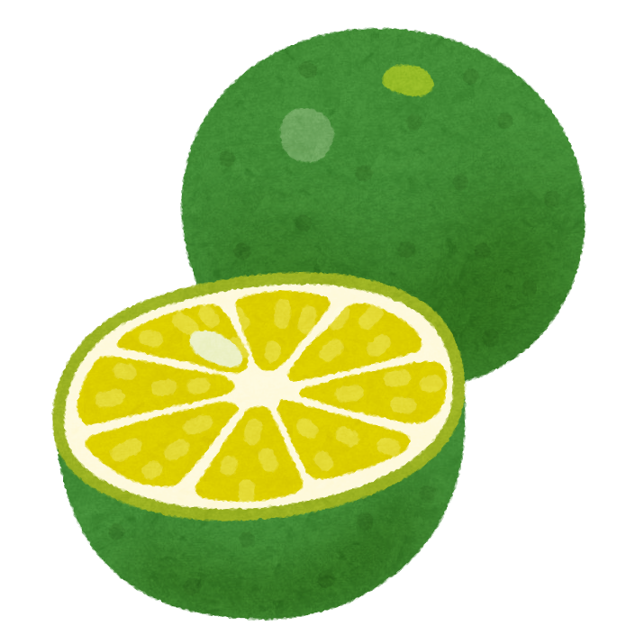

Sudachiについて

Sudachiは不安を軽くする認知行動療法のアプリです。
不安が強い人は偏った考え方を持っています。しかし知識を学びその認知を正すだけでは十分ではありません。実際に行動して「あれ？思ったほど悪い結果にならないぞ」と納得して初めて考え方が変わります。
「自分の苦手な場面を知る」では自分が不安を感じる状況を把握します。同時に自分を客観的に観察することで不安を和らげる効果もあります。
「人見知り克服リスト」では、今までやりたくてもできなかったことを記入します。目標地点を設定することで進みたい方向を明確にします。
「実践レポート」は苦手な場面において、実際に行動する前後に記録を取ります。その際、瞬間的に生まれる「自動思考」を現実に沿った「適応思考」に修正しましょう。また、行動の前後の心境を対比することで、認知の偏りを把握できます。
Sudachiを使って、不安によって制限されていることの克服や、本当にやりたいことの実現に役立ててください。

参考文献
ロナルド・M・ラペイ 越野好文・加賀良 訳
(2003)『内気と不安を軽くする練習帳』
反田克彦
(2014)『人見知りが治るノート』